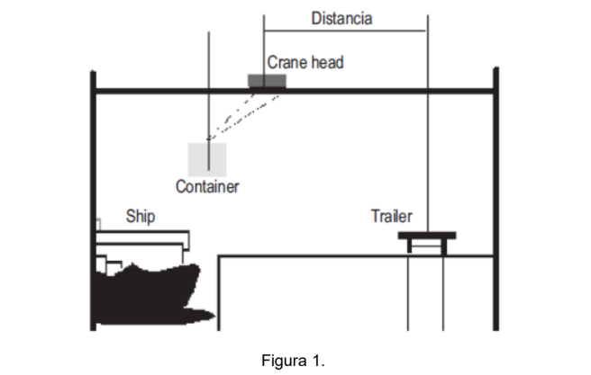
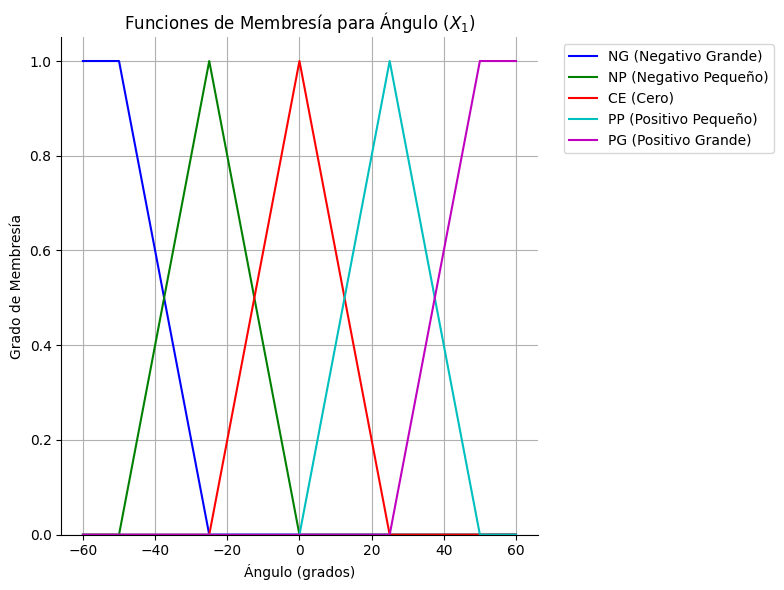
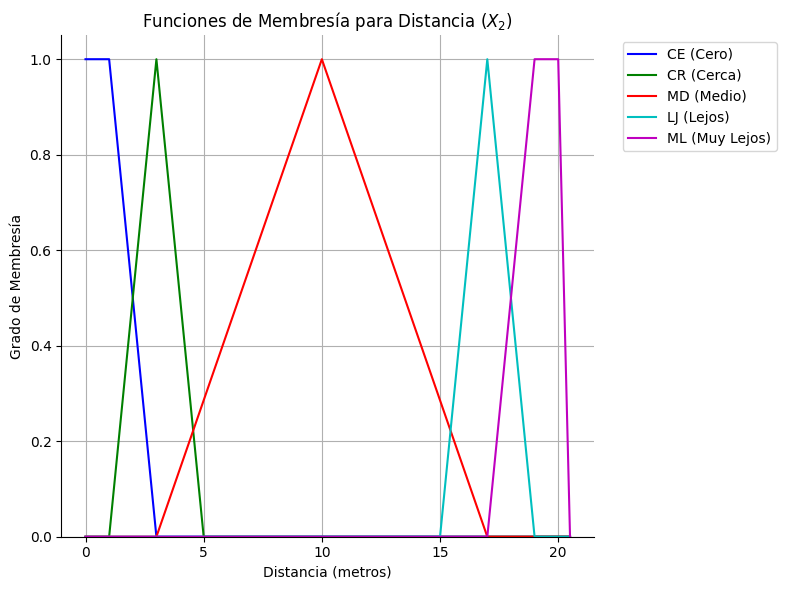
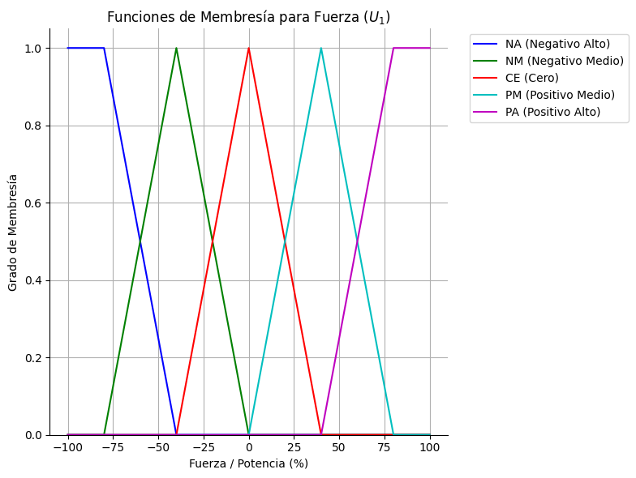

Autor: José Carlos Rapalino Blanco - 0222220010
Universidad de Cartagena - Ingeniería de Sistemas - 2025
Para descargar y cargar contenedores, los puertos usan grúas pórticos que levantan y trasladan los contenedores sobre rieles. El problema de control surge al final del recorrido: una vez sobre el lugar de descarga, se debe esperar a que el balanceo del contenedor se detenga, lo cual es un proceso demorado que incrementa los costos operativos.
Se diseña un Algoritmo de Control Difuso (ACD) que actúa como un operador experto. Este sistema inteligente analiza el ángulo de balanceo y la distancia restante para aplicar una fuerza de control precisa al carro de la grúa. El objetivo es contrarrestar activamente la oscilación, permitiendo una descarga rápida y segura, minimizando así los tiempos de espera.

El Algoritmo de Lógica Difusa (ALD) recibe dos entradas nítidas (del mundo real), las procesa internamente a través de su motor de inferencia y produce una salida nítida que corresponde a la acción de control.
A continuación se muestran las funciones de membresía definidas para cada una de las variables del sistema.



El sistema opera en base a 9 reglas que dictan la acción de control para diferentes combinaciones de estado.
R1: SI Ángulo=PP Y Distancia=cero ENTONCES Fuerza=neg_medio
R2: SI Ángulo=CE Y Distancia=cero ENTONCES Fuerza=cero
R3: SI Ángulo=PP Y Distancia=cerca ENTONCES Fuerza=neg_medio
R4: SI Ángulo=CE Y Distancia=cerca ENTONCES Fuerza=cero
R5: SI Ángulo=NP Y Distancia=cerca ENTONCES Fuerza=pos_medio
R6: SI Ángulo=NP Y Distancia=medio ENTONCES Fuerza=pos_alta
R7: SI Ángulo=NG Y Distancia=medio ENTONCES Fuerza=pos_medio
R8: SI Ángulo=CE Y Distancia=lejos ENTONCES Fuerza=pos_medio
R9: SI Ángulo=NP Y Distancia=lejos ENTONCES Fuerza=pos_alta
Utilice los siguientes controles para simular el comportamiento del sistema. Modifique los valores de entrada y observe cómo el sistema calcula la fuerza de control de salida y justifica gráficamente el resultado, mostrando las áreas de las reglas activadas y el centroide final.
-40.00